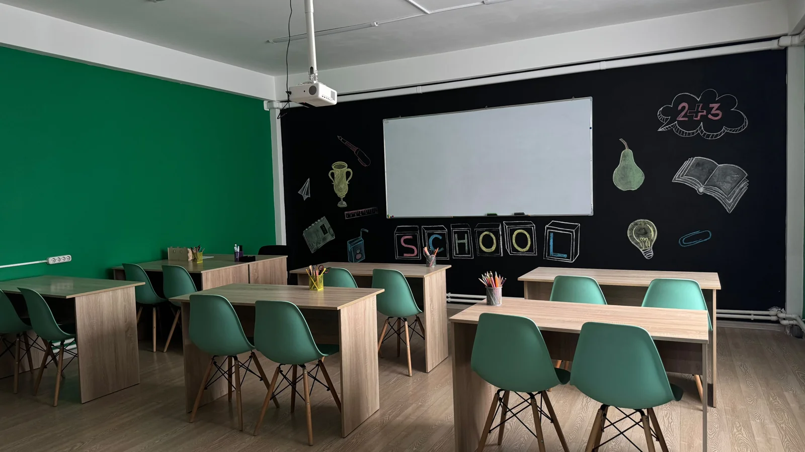
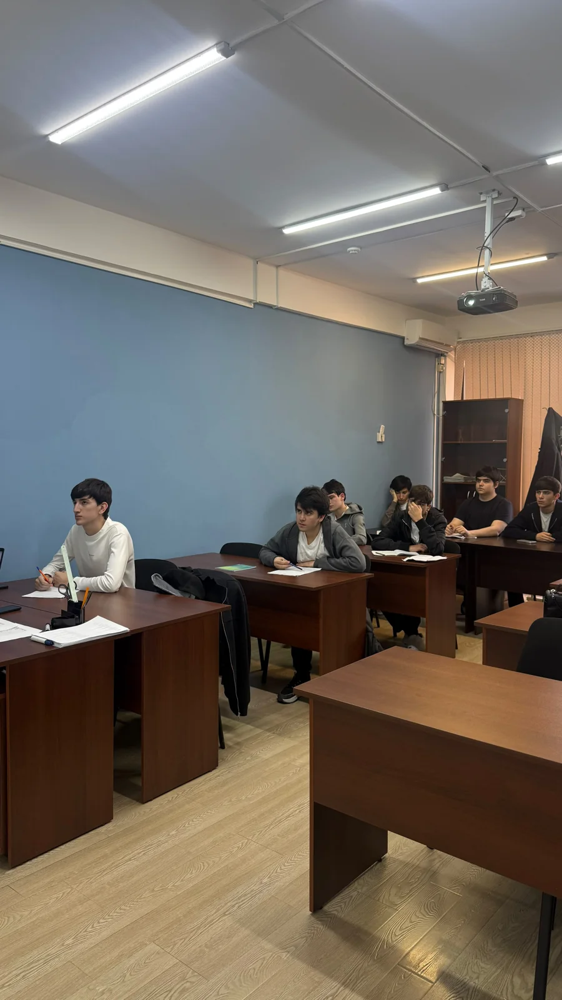

ЕГЭ
Подготовка к выпускным экзаменам. Выбираем предмет и работаем над результатом.
10–11 классГруппа 4–18 человек
6 500 ₽ / месяц
Подготовка к ЕГЭ и ОГЭ с преподавателями, которые умеют объяснять. В Грозном и онлайн.

Подготовка к выпускным экзаменам. Выбираем предмет и работаем над результатом.
Подготовка к экзаменам после 9 класса. Укрепляем знания и разбираемся в заданиях.
ЕГЭ / ОГЭ
Подробнее о подготовке√xЕГЭ / ОГЭ
Подробнее о подготовкеH₂ЕГЭ / ОГЭ
Подробнее о подготовкеДНКЕГЭ / ОГЭ
Подробнее о подготовке§ЕГЭ / ОГЭ
Подробнее о подготовкеFЕГЭ / ОГЭ
Подробнее о подготовке</>ЕГЭ / ОГЭ
Подробнее о подготовкеӀОГЭ · Для взрослых
Подробнее о подготовкеИнформатика · ОГЭ / ЕГЭ
Профильная математика · ЕГЭ
Полные комплекты ФИПИ для скачивания: демонстрационные варианты, спецификации и кодификаторы. Это материалы для самостоятельной работы, без автоматической проверки ответов.
По чеченскому языку отдельного комплекта ОГЭ ФИПИ нет. Материалы этого направления предоставит школа.
8 официальных заданий · до 30 минут
Пройти диагностику8 официальных заданий · до 25 минут
Пройти диагностику8 официальных заданий · до 25 минут
Пройти диагностикуСейчас доступны диагностики ОГЭ. Задания ЕГЭ и остальные предметы добавим позже.
Выберите специалиста по предмету: посмотрите опыт, образование и результаты учеников.
Занимайтесь в классах в Грозном или выберите онлайн-формат, если он доступен по предмету.
Начните с короткой диагностики или обсудите подготовку с преподавателем.

Встречаемся в классах с досками и проекторами. Выбираем предмет, знакомимся с преподавателем и работаем над знаниями.
«Он очень доступно и наглядно объясняет материал, терпеливо отвечает на все вопросы и помогает разобраться в самых сложных задачах».
Из отзыва об уроках Хаважи Абуевича
Выберите предмет и обсудите подготовку со школой.